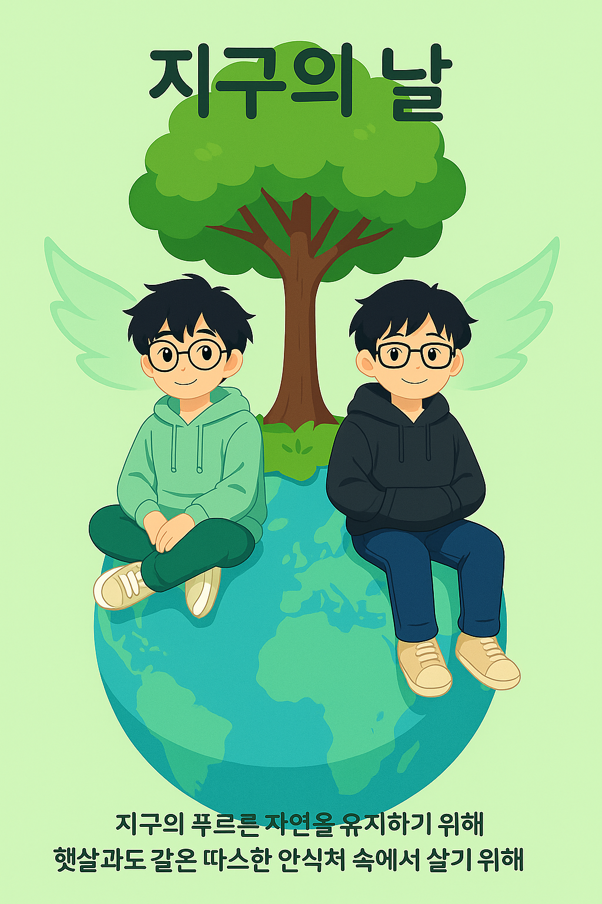

캠페인 설명
👥 팀원 소개
리더: 강민승
기술: 오동렬
디자인: 블리츠크랭크
📘 팀에 대하여
2025년, 서형석, 박동현, 블리츠크랭크가 소환사의 협곡에 당도하게 되었다.
그 후로 많은 세월이 흘러 강민승과 오동렬, 아직까지 남아있던 블리츠크랭크가 그 의지를 이어받아
소환사의 협곡의 환경을 지키기 위해 소환사의 협곡에 오게 되는데..
🌱 팀의 철학
내 통제 안에 있는 것과 밖에 있는 것을 구분하라

덧없이 화창한 날씨와 함께
리더: 강민승
기술: 오동렬
디자인: 블리츠크랭크
2025년, 서형석, 박동현, 블리츠크랭크가 소환사의 협곡에 당도하게 되었다.
그 후로 많은 세월이 흘러 강민승과 오동렬, 아직까지 남아있던 블리츠크랭크가 그 의지를 이어받아
소환사의 협곡의 환경을 지키기 위해 소환사의 협곡에 오게 되는데..
내 통제 안에 있는 것과 밖에 있는 것을 구분하라